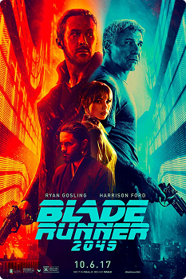

Descobrir filme
2017
Blade Runner 2049
Blade Runner 2049 apresenta uma cidade futurista marcada pela superpopulação, pela tecnologia e por fortes contrastes sociais. O filme ajuda a imaginar possíveis desafios das cidades do futuro e os impactos do avanço tecnológico.
Ver no IMDb